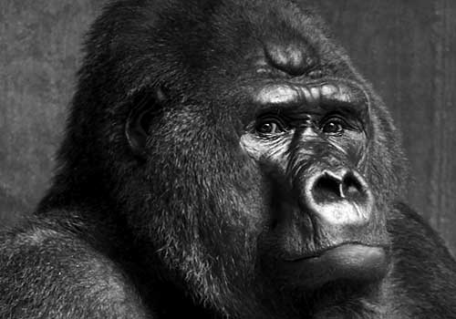

King Kong is the name of a fictional giant ape from the legendary Skull Island, who has appeared in several works since 1933. Most of these bear his name, and include the groundbreaking 1933 film, the film remakes of 1976 and 2005, and numerous sequels.
In the original film, the character's name is Kong - a name given to him by the inhabitants of Skull Island, where Kong lived along with a number of dinosaurs which miraculously escaped extinction. 'King' is an appellation added by an American film crew led by Carl Denham, who captures Kong and takes him to New York City to be exhibited as the 'Eighth Wonder of the World'.

King Kong has appeared in a number of films and television series since his first screen appearance in 1933. These appearances include: 'King Kong vs. Godzilla' (1962), a showdown between two towering legends; 'King Kong Escapes' (1967), a showdown between King Kong and Robot Kong; and 'King Kong Lives' (1986), introducing Lady Kong.
Although all have their strengths, the original 1933 'Classic' and Peter Jackson's 'Extravaganza' are widely accepted to be the best installments in the King Kong franchise.
Ladies and Gentlemen! I give you... Kong! The Eighth Wonder of the World!
Carl Denham
Peter Jackson's extravagant remake of the original 1933 film was received with widespread critical acclaim on its release in 2005. Heavily reliant on CGI effects, the film featured an replica of New York circa 1933 built entirely in CGI. Trivia: In Jackson's remake, King Kong's roar is a lion's roar played backwards at half speed.
Although the 1933 movie featured crude animatronics and a giant ape made entirely of a sponge, it is considered by many to be the definitive version. Trivia: The Directors of King Kong both had a background in wrestling and enthusiastically acted out the the battle between the T-Rex and Kong in the effects studio before the animators shot the scene.
The Famous Primates web site is a Web Standardistas production.
XHTML + CSS released under a Creative Commons Attribution 3.0 license.
Photography Copyright iStockphoto